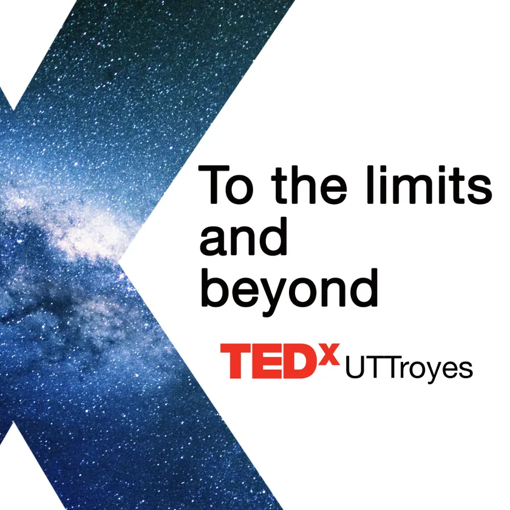

Édition n° 02 · 2017
To the Limits and Beyond
Dès la deuxième édition, la question de la limite était posée : « To the Limits and Beyond ». Dix ans plus tard, la dixième édition la reprend au mot près, et demande cette fois s'il faut franchir ou s'adapter.
La fiche

Ce que consignent les archives
Comme pour 2016, il reste peu de traces de cette édition : un thème, sept speakers, et les talks publiés sur la chaîne TEDx Talks.
- 2017 date exacte non consignée dans les archives
- Université de Technologie de Troyes le lieu de cette édition
- 7 talks publiés sur la chaîne TEDx Talks
Le registre
Billetterie
La dixième ligne du registre s'écrira le 18 mars 2027.
Franchir ou s'adapter ? 800 fauteuils au Centre de Congrès de l'Aube pour en décider.
Billetterie hébergée sur HelloAsso. Aucune donnée n'est collectée sur ce site.